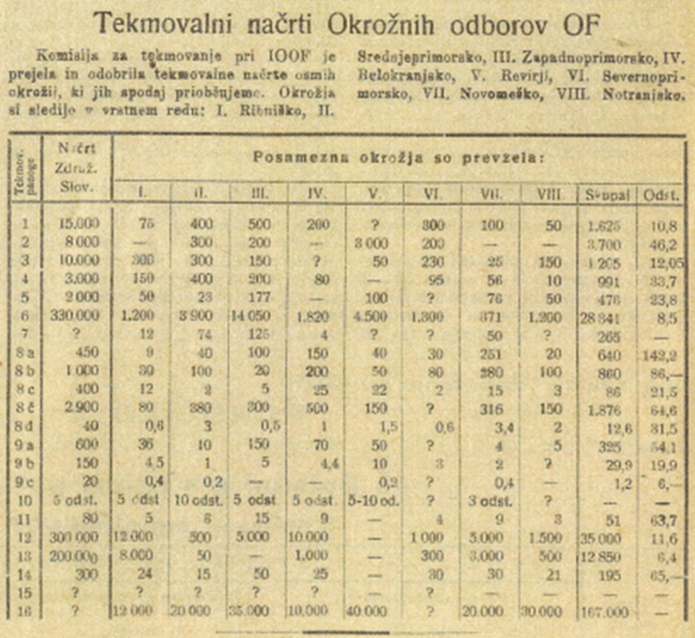

1Poleti in jeseni 1944 je vodstvo odporniškega gibanja izvedlo dve delovni tekmovanji svojih političnih organov in vojaških enot. Članek na podlagi primarnega gradiva analizira zastavitev, izvedbo in rezultate teh tekmovanj, ki so po svoji vsebini predstavljala sinergijo med motivacijskimi in propagandnimi prijemi odporniškega gibanja na Slovenskem ter potrebami po dodatnih materialnih dobrinah in razširitvi človeške baze v letu 1944. Tekmovanja v zbiranju materialne in politične podpore odporniški organizaciji so spodbudila dodatno aktivacijo njenih političnih organov na vseh ravneh in izostritev njihovih političnih nalog. Pridobitev dodatnih materialnih in človeških resursov neposredno od prebivalstva je bila v okoliščinah občutnega primanjkljaja pomembna za delovanje in preživetje odporniške organizacije, izvesti pa jih je bilo mogoče le na območjih, kjer je bilo odporniško gibanje dovolj organizirano in kontrola okupacijskih in kolaborantskih sil ni bila popolna.
2Ključne besede: Osvobodilna fronta slovenskega naroda, odporniško gibanje, tekmovanje, motiviranje, propaganda, druga svetovna vojna, Slovenija
1In the summer and autumn of 1944, the leadership of the resistance movement in Slovenia held two competitions among its political bodies and military units. Based on primary sources, the article analyses the idea, implementation, and results of these competitions, which, in terms of their content, represented a synergy between the resistance movement’s motivational and propaganda approaches and its needs for additional material resources and the expansion of its personnel. The competitions in gathering the material and political support for the resistance organisation spurred the further activation of its political bodies at all levels and encouraged a better definition of their political tasks. Obtaining additional material and human resources directly from the population was vital for the functioning and survival of the resistance organisation under the conditions of significant deficit. However, such actions could only be carried out in the areas where the resistance was sufficiently organised and which were not entirely controlled by the occupying forces and their collaborators.
2Keywords: Liberation Front of the Slovenian Nation, competition, resistance, propaganda, motivation, World War II, Slovenia
1Kako primerno obeležiti triletnico delovanja Osvobodilne fronte slovenskega naroda (OF), se je v začetku marca 1944 vprašalo njeno vodstvo, Izvršni odbor OF (IOOF). V medsebojnih pogovorih večine članov, ki so se zadrževali v bazi 20 v Kočevskem Rogu, je prevladalo prepričanje, da je treba vsestransko obeležiti pomembno obletnico, ki so jo v teh pogovorih določili na 27. april.1 Ne le obeležiti, saj je boj še potekal in vsi so vedeli, da bo za nadaljevanje odpora potrebne še veliko motivacije in sredstev. Kako sprožiti dodatne spodbude bojujočemu se članstvu in prebivalstvu, da bodo učinkovale in okrepile vojne napore, pripravljenost ljudi, da bodo (bolj) sodelovali v odporu, da bodo materialno in fizično podprli odporniško organizacijo in njeno vojsko? Hkrati so čutili, da se je zagon organizacije nekoliko izpraznil. Po velikih nemških protipartizanskih operacijah od septembra do decembra 1943 se je vzpostavilo novo ravnovesje z dobro delujočo nemško okupacijsko upravo na Primorskem in v Ljubljanski pokrajini, v katerem so se območja, na katerih je odporniška organizacija svobodno delovala, občutno skrčila. Sočasno je OF svojo oblastno funkcijo (ljudske oblasti) vsaj v načelu ločevala od politične odporniške organizacije, kar sta najbolje pokazala vsebina 1. zasedanja Slovenskega narodnoosvobodilnega sveta (SNOS) 20. februarja 1944 in razpis volitev v krajevne narodnoosvobodilne odbore (NOO) in delegate za skupščine okrajnih NOO, ki so se imele začeti v kratkem.2
2Za proslavljanje ustanovitve Osvobodilne fronte je njeno vodstvo sestavilo obsežen program aktivnosti.3 Med predlogi je požela ideja o spodbudi članstva OF z uvedbo tekmovanja med odbori OF na vseh ravneh hitro odobravanje. Ne tekmovanja v športnih disciplinah, pač pa tekmovanja v odporu, boju in vzpostavljanju ljudske oblasti.4 Glede na izrecno umestitev je postalo narodno tekmovanje tudi ena od počastitev triletnice OF. Kdo je predlagal prav prijem, da se delovanje odporniške organizacije propagira kot tekmovanje, ni znano.
1Od sklepa do razpisa tekmovanja ni minilo veliko časa, 7. aprila 1944 sta predsednik in sekretar Izvršnega odbora OF (IOOF) Josip Vidmar in Boris Kidrič podpisala odlok o tekmovanju. »IOOF slovenskega naroda razpisuje za proslavo tretje obletnice OF narodno tekmovanje, ki bo trajalo od 27. aprila do 27. junija.«5 Upravičenje tekmovanja je razpisnik opredelil kot »namen buditi narodno samoiniciativo slovenskih ljudi v narodnoosvobodilni borbi in pri graditvi ljudske oblasti ter stopnjevati njegove borbene napore«.6 V povzdignjenih besedah, v katerih je razbrati Kidričev slog, je razvidno, da je vodstvo odporništva upalo, da bo narodno tekmovanje povečalo zagnanost aktivistov na različnih ravneh, pa čeprav so v središče postavljali ljudsko samoiniciativnost. Na to kaže tudi nadaljevanje: »Tekmovanje organizirajo okrožni, okrajni, krajevni odbori OF, poleg tega pa tudi odbori SPZŽ, ZSM in druge masovne organizacije OF.« V osredju pa so bile tekmovalne discipline: »Tekmuje se v vseh panogah narodno-osvobodilne borbe in v izgradnji nove slovenske oblasti za izvršitev postavljenega načrta in za dosego najboljšega uspeha preko postavljenega načrta.«7 Kaj so bile panoge narodnoosvobodilne borbe, je opredelil sekretar IOOF v navodilih za organizacijo narodnega tekmovanja, medtem ko je bilo drugo omenjeno področje – izgradnja ljudske oblasti – jasnejše, saj so se obetale volitve v narodnoosvobodilne odbore vsaj na območjih, ki jih je polno ali delno kontrolirala OF v Ljubljanski pokrajini in na Primorskem.8 Sledila so še določila, da bo rezultate okrožij ocenjeval Izvršni odbor OF sam, rezultate krajevnih in okrajnih organizacij pa okrožni odbori OF. In da bo tekmovanje še bolj podobno pravemu tekmovanju, bo IO OF najboljšim podelil nagrade.9
2Narodno tekmovanje je v tekmovalne discipline zajelo širok razpon dejavnosti, ki so jih sicer z večjim ali manjšim uspehom, možnostmi in pozornostjo izvajali odbori OF tudi do tedaj:
3Za vzpostavitev vsaj primerljivih pogojev tekmovanja in nadzor nad tekmovanjem so navodila IO OF zahtevala pripravo in verifikacijo načrtov tekmovanja. Krajevni odbori in celo posamezniki naj bi izdelali tekmovalne načrte, jih posredovali okrajnim odborom, ti bi jih po primerjavi z lastno izdelanimi zbirnimi načrti odobrili ali zahtevali popravke, nato pa naj bi se enak postopek ponovil še na okrožni stopnji.10 Kidričeva navodila so zahtevala takojšnja zborovanja oziroma seje odborov OF, da oblikujejo sklepe o udeležbi na tekmovanju, saj je bilo do začetka tekmovanja le tri tedne. Popularizacija tekmovanja ni bila pretirano razkošna; okrožja oziroma pokrajinske organe OF so zavezali, da začnejo izdajati okrožne vestnike o tekmovanju, kjer bodo objavljali načrte in rezultate.11
4Razpisu je sledila praktična izvedba. Da okrožnim odborom vse ni bilo tako jasno, kaže naknadno poročilo okrožja Novo mesto, češ da so bile glede tekmovanja nejasnosti in zato tudi različna tolmačenja.12 Delno se je tega zavedal tudi sam razpisnik, ko je v prvem stavku navodil poudaril, da ne gre za nove vsebine dela OF (in nove obremenitve aktivistov), pač pa za »nov tempo«, nov sistem in metode dela.13 Tako je komisija za tekmovanje Okrožnega odbora (OO) OF Novo mesto ugotovila: »Vaščani in meščani so sicer bili pripravljeni tekmovati, toda ni jim bilo jasno, v čem naj tekmujejo. […] Tolmačili smo tovarišem na sestankih in preko 'Našega tekmovanja', da bo vsakdo tekmoval na svojem področju dela prav s tem, da bo v času tekmovanja svoje vsakodnevno delo opravljal boljše, uspešnejše, da bo delal še več in da bo uspeh tega dela številčno večji in po kakovosti boljši.«14
5Predvsem pa so bile informacijske poti prepočasne, da bi v vseh okrožjih tekmovanje sploh lahko začeli 27. aprila. Spričo tega so se najbrž začele pritožbe, saj je nekaj tekmovalnosti med pristaši tudi sredi vojnih razmer le bilo, čeprav lastne politične kariere še niso bile v ospredju interesa posameznih aktivistov. Tudi tekmovalna glasila so začela izhajati šele sredi tekmovanja. Izvršni odbor OF je zato naknadno, 30. junija 1944 sklenil, da tisti odbori, ki tekmovati niso mogli takoj spočetka, tekmovanje nadaljujejo do 15. julija, nato pa se mora tekmovanje brezpogojno zaključiti na vsem slovenskem ozemlju ter gradivo poslati Izvršnemu odboru OF. Ta je za oceno rezultatov in izbiro najboljših namreč medtem ustanovil posebno komisijo in že vnaprej dopolnil določila tekmovanja, češ da se bo tistim okrožjem, ki bi tekmovala manj kot dva meseca, pri oceni rezultatov upošteval dejanski čas, ko so lahko tekmovala.15
6Odbori OF na vseh organizacijskih stopnjah so narodno tekmovanje sprejeli kot svojo nalogo, nekateri najbrž tudi kot izziv. Privlačno je še bilo, da so propozicije dopuščale, da so si tekmovanje lahko napovedovali tudi sosednji krajevni ali okrajni odbori. Tekmovanje se je začelo – vendar z birokratskim začetkom, saj je bilo treba najprej izdelati načrte, jih predložiti v verifikacijo višjim odborom in morebiti popraviti, če niso ustrezali presoji višjega odbora. Sila veliko časa je to pomenilo, posebej v razmerah, ko je bila komunikacija med organizacijami počasnejša in zaradi visokega rizika kurirske službe tudi nezanesljiva. V časovni stiski je tako okrožni odbor Novo mesto kar sam sestavil okrožni okvirni načrt, ki pa »ni bil v skladu s prilikami posameznih okrajev« in je bil zato neizvedljiv.16 Več bližnjih okrožnih odborov je navodila dobilo pravočasno in so tekmovanje lahko začeli 27. aprila, ko so za uvod priredili veliko okrajnih in okrožnih proslav triletnice OF. Veliko pa je bilo tudi okrožnih in rajonskih odborov, ki so navodila pozabili pregledati ali jih iz najrazličnejših vzrokov niso dobili.
7Vzneseno je propagandist opisal, kako razpisano tekmovanje prevzema vso Gorenjsko. Z geslom »Zavedajmo se, da je vsaka naša akcija tekmovanje« so potem poskušali spodbuditi tekmovalnost med vsemi masovnimi političnimi organizacijami.17 Podobno je Primorski poročevalec natisnil članek o razpisanem tekmovanju, v katerem je pisec povzel glavna določila tekmovanja ter poudaril, da mora tekmovanje obsegati tudi »vse panoge ljudskega kulturno-prosvetnega udejstvovanja«, amaterskega ustvarjanja, šolskih in drugih kulturnih proslav.18 To ni bilo problematično, saj so navodila dopuščala tudi oblikovanje lastnih tekmovalnih disciplin.
8V tekmovanje so, najbrž po ukazu Glavnega štaba, vključili tudi partizansko vojsko. Pod udarnim naslovom Naša vojska tekmuje so, kakor sledi iz glasil in poročil, tekmovali v zbiranju in racionalni rabi orožja in streliva ter v uspešnosti v bojih. Tako že prva številka gorenjskega tekmovalnega glasila slab mesec po začetku tekmovanja poudarjeno poroča, da je 30. divizija zgolj v prvem tednu maja zbrala dva mitraljeza, 32 pušk in več kot 21.000 kosov streliva, in hkrati opisuje izbojevane boje v smislu gesla kot dosežke na tekmovanju.19 V naslednjih dveh številkah je na podoben način pozornost posvečena 31. diviziji, njene akcije opisuje kot prispevek na narodnem tekmovanju.20
9Tekmovanje se je medtem odvijalo. Tekmovanju so se lahko posvetili tam, kjer je obstajalo osvobojeno ali kontrolirano ozemlje in so se aktivisti lahko preprosteje gibali in tudi dejansko ukrepali na tekmovalnih področjih. To je bila tudi temeljna slabost tekmovanja, saj pogoji tekmovanja nikakor niso bili niti podobni za vsa okrožja oziroma okraje ali kraje. Tako so se, kot razberemo, v Narodno tekmovanje vključila okrožja v Ljubljanski pokrajini, na Primorskem in deloma Gorenjskem.
10Težave zaradi neobveščenosti, prepoznega začetka in vojnih razmer so se še nadaljevale. Izvršnemu odboru OF, ki mu je bilo veliko do tega, da tekmovanje izpelje čim širše, ni preostalo drugega, kot da je rok za zaključek in izdelavo poročil z rezultati še podaljšal. Komisija je dobivala okrožna poročila, ki so izkazovala, da ambiciozno zastavljenih tekmovalnih načrtov ni bilo mogoče uresničiti v 100 odstotkih. No, s pomočjo okrožnih odborov v obliki konkretnih predlog tekmovalnih načrtov so okraji in krajevni odbori izdelali svoje tekmovalne načrte, a velika večina šele po 27. aprilu, ko naj bi tekmovanje že teklo.21 A brez zamud ni šlo. Goriško okrožje se je tekmovanja lotilo šele 20. maja, čeprav se je nanj pripravljalo od 5. maja, kar bi pomenilo, da so takrat dobili razpisne materiale. Toda poudarili so, da so nabor tekmovalnih panog razširili še na druga področja, na gospodarstvo, propagando, prosveto in mobilizacijo.22
11Tekmovanje v belokranjskem okrožju so izvedli, kot sledi iz končnega okrožnega poročila, na vseh tekmovalnih področjih. V vzpostavljanju mreže odborov OF so po oceni okrožnega odbora OF plan izpolnili stoodstotno, saj so okrožje razdelili na okraje, vzpostavili vse okrajne odbore OF ter 115 krajevnih odborov OF (in v »belih« vaseh zaupnike).23 Volitve so uvedli z 86 dni trajajočo predvolilno kampanjo, izvedli volitve povsod kjer so bile postavljene kandidatne liste, z izjemo ene vasi, kjer volilni upravičenci kolektivno niso hoteli voliti. Najvišjo volilno udeležbo so dosegli v Metliki, kar 95,8 %. Sklicali so tudi zasedanja vseh okrajnih in okrožne narodnoosvobodilne skupščine. Potem ko so še navedli najboljše KNOO v okrožju, so sklenili poročilo, da so tudi to panogo izvršili »vsaj 100 %«.24
12V preskrbnih panogah tekmovanja je okrožje uspelo doseči, da se je obdelala vsa plodna zemlja, celo več kot kdajkoli prej, ne glede na to, da je obdelava v veliki meri slonela na ženskah. »One so opravljale najtežja poljska dela, od oranja do žetve. Ženskam je potrebno izreči posebno pohvalo.«25 Z medsebojno pomočjo 750 družinam, katerih moški člani so bili v vojski, so opravili 250.000 delovnih ur in še 65.000 delovnih ur z živino.26 Izključno za vojsko je bilo obdelanih 40 njiv in pokošenih veliko travnikov. »Na Stražnem vrhu obdelujejo pioniri za našo vojsko dve njivi z zelenjavo.« Med živinorejskimi panogami so uspeli povečati kokošjerejo za 25 do 50 %, rejo svinj za 30 %. V okviru tekmovanja so uredili 78 gnojišč, a zabeležili »Dragatuš ni uredil vseh gnojišč kot se je obvezal v tekmovalnem načrtu«.27
13V prehranskem delu tekmovanja je okrožje kljub pasivnosti krajev in težkim razmeram v dvomesečnem obdobju tekmovanja zbralo in oddalo »za vojsko in institucije« 80 vagonov hrane in 240 glav živine. Več kot dvajset vasi je polno oddalo odrejene redne dajatve. »Poleg rednih dajatev je Okrožje zbralo za vojsko še najmanj 10.000 kg hrane. […] Vas Kot v okraju Semič je nahranila v dveh mesecih poleg rednih dajatev 480 vojakov in razdelila 750 litrov vina.«28 V času tekmovanja so obnovili delovanje osmih žag, postavili tri apnenice, v katerih so nažgali 110 ton apna, ter dve kopi za kuhanje oglja. Obnovili so delovanje 50 obrtnih delavnic najrazličnejših, a nujno potrebnih obrti, spodbudili so tudi domačo obrt. »Tov. Žnidaršič Franc s Štrekljevca samouk je izdelal 350 grabelj.« Ženske in mladinke so sešile 6680 kosov perila za vojsko. Kot postavki v tekmovanju so okrožni aktivisti vključili celo delovanje treh obratov, električne centrale in železolivarne v Črnomlju ter strojarne v Metliki. Po njihovem mnenju so tekmovalni načrt na tem področju presegli 100 %.
14Zbrali so 442.728 lir t. i. posojila narodne osvoboditve, največ v okraju Črnomelj. »Vas Pribinci je dala 11.555 lir posojila, vas Butoraj 8000 lir. […] Tov. Majerle Jože in Dolnjih Radanc je dal sam 2000 Lit, ko je videl, da vas ne upa dati v načrt 500 Lit posojila.«29 Smela pa je bila trditev, da se je za 50 % dvignilo zaupanje v lirski bon, ki ga je izdajal DEZAS.
15Pokrajinski odbor OF za Gorenjsko je izvedel po koncu tekmovanja tudi oceno doseženih rezultatov. Na seji, ki je bila posvečena le tekmovanjema, je ugotovil najboljše po posameznih panogah tekmovanja. Tako je bilo okrožje Jesenice najboljše pri širitvi organizacij OF, okrožje Škofja Loka pri utrjevanju OF, okraj Žiri najboljši okraj na Gorenjskem, Novljan, Aleš in Vida pa najboljši med aktivisti. Odbor je proglasil tudi najboljša okrožja pri posameznih panogah tekmovanja. Okrožje Jesenice je tako bilo najboljše pri propagandi, napisnih akcijah, Škofja Loka pri »masovni propagandi«, v razkrajanju domobranskih enot, okrožje Kamnik v pomoči vojski. »Okrožje Kamnik je najbolj popolno mobiliziralo, na Jesenicah je najbolj uspela mobilizacija. Mobiliziranih je bilo 1430 mož.« Zbrali so tudi nad milijon mark (RM) posojila. Za nagrado je dobil aktivist Don brzostrelko in sklenili so sledeče: »[Z]a nagrado se bodo delile tudi slike tovariša maršala Tita.«30
16Skromnejše so bile možnosti tekmovanja na območjih na robovih osvobojenega ozemlja, kot je bilo okrožje Litija, ki je imelo še to oviro, da se je med tekmovanjem reorganizirano; vključili so ga v Pokrajinski odbor OF za Gorenjsko in nato spet v Pokrajinski odbor OF za Štajersko. Za poglavitne zastavitve in dosežke so si njeni aktivisti zastavili razširitev odborov OF v vse vasi in pritegnitev prebivalstva z »masovnimi sestanki« in mitingi, ustanavljanjem odborov SPŽZ in ZSM, zbiranjem narodnega posojila (92.000 RM), ustanavljanjem gospodarskih komisij in oddajo hrane za partizanske enote, v manj nadzorovanem okraju Zasavje so ustanovili štiri šole s 120 učenci.31
17Okrožje Ribnica je tekmovanje zaključilo 16. julija. V zaključen poročilu je okrožni odbor poudaril, da so bili glede na razmere dosežki tekmovanja relativno dobri. Za najboljši okraj je bil izbran okraj Banja Loka. Osvobojen, a pasiven je »pokazal mnogo krepke volje za izvedbo nalog tega tekmovanja«. Nato so bili izbrani najboljši še v posameznih, kar 38 dejavnostih. Okraj Barje je bil najboljši v delu v najtežjih razmerah in boju, pri zbiranju narodnega posojila okraja Banja Loka in Ribnica (25.200 oz. 20.000 lir), v kolektivnem delu mladine okraj Velike Lašče (10.50 delovnih ur), ki je bil najboljši tudi v obdelovanju njiv za partizansko vojsko.32
18Goriško okrožje je v drugi polovici julija le sporočilo, da je tekmovanje končalo deloma 27. junija, deloma 15. julija, a rezultatov ne more sporočiti še vsaj 15 dni, ker še zbirajo poročila okrajev.33
1Pomlad 1944 je dala odporniškemu gibanju ponoven polet, kar je lahko bilo tudi vsaj malo rezultat tekmovanja – verjetno pa še bolj vpliv spremenjenih globalnih razmer, v katerih so Združeni narodi vedno jasneje realizirali svojo premoč. V takšnem položaju se je vodstvo odporniške organizacije kljub vidnim težavam in še ne ugotovljenemu rezultatu narodnega tekmovanja odločilo za novo spodbudo. »Ker smo v končnem in najodločilnejšem razdobju te vojne, ko moramo vpreči vse za dosego naše svobode in utrditev naše narodne oblasti, zato razpisuje Izvršni odbor Osvobodilne fronte novo tekmovanje pod geslom 'vse za dokončno zmago'. To tekmovanje se bo pričelo 20. julija in bo trajalo 3 mesece do 20. oktobra.«34 Če je bil prej poudarek na množičnosti, utrditvi, je bil zdaj poudarek na zmagi. »Posebej naj bo poudarek tega tekmovanja na pospeševanju splošne mobilizacije, podpori naši vojski, razkroju belogardizma in švabobranstva ter utrjevanju Osvobodilne Fronte.«35 Nujnost vključitve mobilizacije v tekmovanje je še posebej poudarilo Predsedstvo SNOS-a v direktivni okrožnici konec julija 1944. Posebej je izpostavilo spremljanje mobilizacije v več statističnih kategorijah: vojaških obveznikov, domobrancev, partizanskih dezerterjev in skrivačev.36 Priporočilo je v enaki dikciji šlo med prve tri panoge tekmovanja.
2Toda očitno je bilo za pripravo tekmovanja spet premalo časa ali pa so nanj v vodstvu OF nekoliko pozabili. 19. julija, ko naj bi bilo tekmovanje tik pred začetkom, sta predsednik in tajnik IOOF vsem pokrajinskim in okrožnim odborom OF razposlala dopis, v katerem sta jih obvestila, da se bo tekmovanje – »iz tehničnih razlogov, posebno pa zato, da se čim popolnejše dovrši prvo tekmovanje« – začelo 20. avgusta in bo trajalo do 20. oktobra 1944. Glede na to, da sta posvetila veliko skrbi temu, da bi IOOF le dobil rezultate in poročila narodnega tekmovanja, lahko sklepamo, da poročil mnogih okrožij še vedno ni imel.37 Še isti dan sta se Vidmar in Kidrič obrnila na odseke SNOS-a z nalogo, da vsak odsek strokovno opredeli v okviru tekmovanja najpomembnejšo in tekmovalno izvedljivo nalogo, ki bi nato postala tekmovalna panoga. Pa ne le to, vsak odsek naj nato ocenjeni cilj razdeli po okrožjih. Iz dopisa tudi prvič izvemo, da se bo tekmovanje imenovalo Tekmovanje zmage.38 Ko je najbrž do roka 1. avgusta IOOF le dobil strokovne podlage za panoge tekmovanja, je 3. avgusta Tekmovanje zmage tudi razpisal.39 Tekmovanja, katerega namen je bil po razpisu »do skrajnosti zvišati borbeno enotnost slovenskega naroda, stopnjevati borbene napore slovenskega ljudstva v narodno osvobodilni borbi s popolno mobilizacijo vseh narodu zvestih sil, približati zmago in se nanjo pripraviti«, naj se udeležijo vse organizacije Osvobodilne fronte. »Tekmovanja naj se udeleži vsak Slovenec in vsak slovenski kraj.« Vodijo naj ga okrožni, okrajni in krajevni odbori OF, vendar ne le aktivisti. Po dvomesečnem tekmovanju morajo okrajni, okrožni in IOOF oceniti dosežene rezultate, zato potrebujejo poročila, ki morajo dospeti do okrožnih odborov 10. novembra, v IOOF pa okrožna do 20. novembra. Podrobneje je razpis opredelil tudi kriterije za nagrade: »IOOF bo nagradil najboljše okrožje, v vsakem okrožju najboljši okrajni odbor, v vsakem okrajnem odboru najboljši krajevni odbor in v vsakem krajevnem odboru OF najvrednejšega moškega, žensko in mladinca oz. mladinko s posebno nagrado in priznanjem.«40
3Z izvedbo in rezultati narodnega tekmovanja v vodstvu OF niso bili povsem zadovoljni. Ne le to, da niso imeli poročil, precej jasno je bilo, da so tekmovanje odbori vzeli kot še eno od nalog. S časovne razdalje nekaj tednov je komisija javno, v tekmovalnem glasilu objavila kritično analizo izvedbe narodnega tekmovanja. Izpostavila je predvsem dejstvo, da je tekmovanje ostalo med aktivisti in med odbori, ni pa postalo tekmovanje množic; da prebivalstvu ni bil pojasnjen namen tekmovanja, neorganiziranost, premajhna skrb odborov za tekmovanje, da tekmovalne discipline niso bile določene.41 V podobni analizi precej kritičnega okrožnega odbora Novo mesto je poudarjeno dvoje, da tekmovanja aktivisti niso uspeli zanesti med množico pristašev, držali so »ga v ozkem krogu ilegalnih aktivistov kakor tajinstvenost«.42 In po drugi strani, aktivisti ga »niso sprejemali s pravim razumevanjem, niso videli njegovega pravega smisla«, tekmovanje so torej opustili, ker naj bi vpadi nasprotnika tekmovanje onemogočali.
4V naslednjih dneh je IOOF opravil vse priprave, ki jih je nakazal v razpisu. 8. avgusta je najprej odobril razpis tekmovanja in njegov pravilnik, odobril je ustanovitev posebnega tekmovalnega lista in imenoval Komisijo za tekmovanje pri IOOF, na čelo katere je postavil svojega člana Franceta Lubeja, za tajnika pa je imenoval Ceneta Kranjca. Člane komisije za tekmovanje so poiskali med manj zaposlenimi člani širšega vodstva OF in aktivisti; člani so tako bili Pepca Kardelj, Josip Jeras, France Svetek, Milan Apih, Zima Vrščaj in Vilma Baebler.43 Tokrat sta torej bili priprava in izvedba tekmovanja bolj premišljeni. Izvršni odbor je za ocenjevanje in spremljanje tekmovanja že spočetka imenoval komisijo, ki je razdelala vso tematiko, preverjala tekmovalne načrte in bila v stiku z okrožnimi, pa tudi okrajnimi komisijami za tekmovanje, ki so jih morali ustanoviti okrožni in okrajni odbori.44
5Načrt tekmovanja je predvidel šestnajst tekmovalnih panog, od katerih je bilo sedem »političnih«: mobilizacija na podeželju in iz industrijskih centov, razkroj domobranstva in vključitev domobrancev in »švabobrancev« v partizansko vojsko, zajem skrivačev in dezerterjev v NOV in POS, ustanavljanje novih odborov OF, pridobivanje novih aktivnih pristašev, izvedba volitev krajevnih narodnoosvobodilnih odborov; in devet »gospodarskih«: nabava osnovnih živil (žita, krompirja, fižola, mesa, maščobe), nabava sadja, posejane obdelovalne površine povečati za 5 %, zgraditi 80 apnenic, pripraviti drva in jih dostaviti v bližino vasi, izdelati dovolj žaganega lesa in oglja, zbrati lubje za pridobitev čreslovine, število delovnih ur pri obdelavi zapuščene zemlje.45 To pot so torej bile panoge opredeljene bolj konkretno.
6Čas, ko je Komisija za tekmovanje pri IOOF uspela sestaviti tekmovalni načrt na ravni »Združene Slovenije«, ni povsem ugotovljiv, a ga je komisija vendarle objavila že v prvi številki tekmovalnega vestnika, ki je izšel z datumom 10. avgust.46 Glasilo z naslovom Tekmovanje zmage so natisnili v velikem številu izvodov, tako da jih je dobilo vsako okrožje vsaj nekaj desetin – z namenom, da jih razširijo v vse okrajne in krajevne odbore in množične organizacije.47
7Načrt nacionalnega tekmovanja je bil zastavljen sila ambiciozno, saj je predvidel v dveh mesecih vključitev v NOV in POS od 10.000 do 15.000 vojaških obveznikov, od 5000 do 8000 delavcev v okupatorjevih obratih, 10.000 domobrancev in 3000 skrivačev in dezerterjev iz partizanske vojske (skupaj 28.000–36.000, op. a.), 2000 novih odborov OF, pridobljenih novih 100.000 moških, 150.000 žensk in 80.000 mladincev za delo v OF.48 »Gospodarski« cilji tekmovanja so izhajali iz dvomesečne porabe partizanske vojske (450 ton moke, 1000 ton krompirja, 400 ton ješprenja ali fižola, 900 ton mesa = 2900 glav živine), deloma pa tudi ustanov narodnoosvobodilnega gibanja ter prebivalstva (600 ton sadja, 150 ton suhega sadja, 20 ton suhih gob, 300.000 m3 drv) ter tudi iz načrtov gospodarjenja (200.000 m3 stavbnega lesa, 80 apnenic, 300 kop oglja, obdelava zapuščene zemlje).49
8Tekmovanju zmage je Glavni štab NOV in POS 11. avgusta z razpisom za »drugo vojaško tekmovanje« med 1. septembrom in 1. decembrom 1944 pridružil tudi partizansko vojsko. V ta namen je ustanovil komisijo za tekmovanje, ta pa je 18. avgusta objavila pravila in modificirane panoge tekmovanja, ki so zajele vsa področja delovanja in bojevanja partizanskih enot, od bojevanja (število ubitih, ranjenih in ujetih sovražnih vojakov, lastne izgube), zaplenjeno orožje, izven boja pridobljeno orožje, število ur vojaškega usposabljanja, političnih ur, sodelovanja s prebivalstvom, rednost preskrbe borcev s hrano, kvaliteta in hitrost sanitetne oskrbe in še druge panoge, tako da je lahko tekmovala vsaka enota in služba, posebno tekmovanje pa so imeli tudi štabi enot.50
9Pripravljanje tekmovalnih načrtov na nižjih ravneh je terjalo svoj čas. Okrožni odbori so relativno hitro izdelali svoje načrte, a je vendar to delo potekalo še ves avgust in prvo polovico septembra 1944.
10Okrožje Srednja Primorska je tekmovalni načrt sestavilo 29. avgusta (komisija se je prvič sestala dva dni prej), 2. septembra je Komisija za tekmovanje zmage potrdila njegov prejem, ga takoj z nekaj spremembami potrdila in 5. septembra je bil potrjen načrt na sedežu okrožja. Glede na to, da je bil to drugi (za okrožjem Ribnica) potrjen okrožni okvirni načrt, je jasno, da se je načrtovanje tekmovanja močno zavleklo.51 Okrožje Južna Primorska je – menda zadnje – svoj načrt pridobilo šele v začetku oktobra.
11Okrožje Zapadna Primorska si je svoj tekmovalni načrt izgotovilo med prvimi – v prvih dneh septembra. Načrt je zagotavljal, da bodo v okviru tekmovanja izvedli popolno mobilizacijo, v Benečiji pa zbrali 500 prostovoljcev za partizansko vojsko, vanjo privedli 120 prisilno mobiliziranih domobrancev in 200 skrivačev ter za delo v OF 3350 novih ljudi. Razpisanim panogam so priključili zajeten nabor svojih, na propagandnem in prosvetnem polju, od prirejanja mitingov do pisanja dopisov, pesnjenja in snovanja pevskih zborov.52
12Svoj tekmovalni načrt je okrožje Novo mesto poslalo šele 28. septembra, popravke je izdelovalo še vedno v začetku oktobra. Vzrok temu je bil, je odbor odgovoril na karanje Komisije za tekmovanje zmage pri IOOF, »ker smo čakali, da so nam iz okrajev poslali tekmovalne načrte, na podlagi katerih smo si potem lahko naredili tekmovalni načrt«, prej pa so dolgo čakali na obljubljene direktive za sestavo tekmovalnih načrtov.53 V svojem tekmovalnem vestniku je okrožni odbor tudi rešil vprašanje, ki se je pogosto zastavljalo nižjim odborom, namreč kako tekmovati v okoljih, ki so bili pod delnim ali polnim nadzorom okupatorja. »Odgovor je prav lahak: Tudi v teh okrajih se bo tekmovalo, ker v takih krajih je še več dela na poprišču naše organizacije.« Seveda bodo izbrali tiste tekmovalne panoge, ki jih bodo lahko izvedli.54 Okrožni odbor za Notranjsko je bil še bolj direkten; ko je 3. oktobra komisiji šele predložil okrožni tekmovalni načrt, je hkrati priložil že vmesno poročilo o doseženih rezultatih, ki je izkazovalo po posameznih panogah od 25- do 100-odstotno realizacijo, kar kaže dvotirnost, ki so jo glede tekmovanja ubrala okrožja in verjetno tudi okrajni odbori OF.55
13Komisija za tekmovanje je okrožne načrte resno pregledovala, jih primerjala s tekmovalnim načrtom »Združene Slovenije« in zahtevala marsikateri popravek, ki se je nanašal na obsege posameznih tekmovalnih panog. Običajno so, da so prihranili čas, načrt pogojno odobrili z zahtevanimi konkretnimi popravki.56 Tudi okrožja so ubrala bližnjice, tako okrožje za Srednjo Primorsko: »Še predno nam je dospel vaš dopis z dne 2. septembra t. l., s katerim ste odobrili naš okvirni načrt, smo postavili okrajne komisije za tekmovanje, ki so se takoj lotile nalog katere so jim bile poverjene. Postavile so se tudi krajevne komisije […]«57
14Tekmovalni načrt okrožja Južna Primorska, ki se je pridružilo tekmovanju med zadnjimi, je vseboval konkretne postavke za vseh šestnajst tekmovalnih panog, med drugim: volitve v 147 krajih, mobilizacijo 200 borcev in dezerterjev, 60 ton žita, 180,6 tone krompirja, 81 ton živine, 1,8 tone fižola, 12 stotov suhega sadja, 490 l žganja in namensko za pogorelce 55 stotov žita in 60 stotov fižola, 30.000 delovnih ur, zbranih 1.500.000 Lit za nabavo blaga in tobaka, 200.000 lit za nabavo sanitetnega materiala, 50.000 lir za socialno skrbstvo, 4 milijone lir posojila svobode, izvedba 60 mitingov in razdelitev 20.000 letakov. Ženska SPZŽ je dodala še svoj načrt (100 rjuh in kosov perila, 700 kg suhega sadja, 200 kg maščob, 1000 jajc …), mladinska ZSM pa svojega (417 sestankov, 32 študijskih sestankov, 40 sestankov s pionirji, 75 kulturnih prireditev).58
15Sredi septembra je komisija za Tekmovanje zmage imela štiri odobrene okrožne tekmovalne načrte, dva iz Ljubljanske pokrajine in dva s Primorske. Do prvih dni oktobra 1944 je Komisija le zbrala večino okrožnih tekmovalnih načrtov in pripravila prvi (in tudi edini znani) celovitejši pregled tekmovalnih ciljev. Glede na slovenski tekmovalni načrt je osem okrožij najavilo cilje, ki so skupaj obsegali od 8 do 141 % zastavljenih v nacionalnem programu.59

16Tekmovanju se je naknadno pridružilo tudi okrožje OF za Mežiško dolino. Svoj tekmovalni načrt je poenostavilo v devet točk, od mobilizacije 300 moških in razkroja vermanstva do sejanja ozimin na več površinah.60 Mnogo zahtevnejši je bil tekmovalni načrt OO OF Revirji. Prvotnega je že v prvi polovici septembra sestavil kar sam okrožni odbor, a ga je komisija za tekmovanje pri IOOF skritizirala, tako da je ta nato imenoval okrožno tekmovalno komisijo, načrt izpopolnil in popravil. Ta je predvidel mobilizacijo v NOV in POS kar 90 % moških, starih od 17 do 50 let, 95 % rudarjev in tehničnega osebja – kar 3000 mož – ter 50 mobiliziranih vermanov, ustanovitev 100 krajevnih odborov OF in vključitev v OF novih 1500 moških, 1000 žensk in 2000 mladincev. Med gospodarskimi panogami tekmovanja pa preseneča načrt s postavkami pridobiti 70 stotov sladkorja, kar 10 ton soli in 5000 l žganja. In ne le to, v obširnih navodilih je okrožna tekmovalna komisija dala natančna navodila glede vseh šestnajstih tekmovalnih panog, pojasnila, da v dosežke tekmovanja sodi vse, kar odbor OF naredi ali kraj odda bodisi vojski ali gospodarskim komisijam, zahtevala redno poročanje vsakih štirinajst dni, za neporočanje pa zagrozila z disciplinskimi kaznimi.61
17Že sredi tekmovanja se je komisija odločila, da bi dobilo Tekmovanje zmage tudi svoj plakat, kar bi mnogo prispevalo k popularizaciji. Osnutek so 3. septembra naročili slikarju Nikolaju Pirnatu, ki je pet dni pozneje poslal svoj predlog grafične podobe. Toda komisija z njim ni bila zadovoljna, češ da je »v sedanji fazi vrhunca borbe lik žene preveč mirnodobski, in ne vabi k zvišanju borbenih in delovnih naporov, temveč k zmagoslavnemu pirovanju. Danes moramo poudariti delo in borbo temeljnih množic, medtem ko je v izdelanem osnutku težišče na zmagi«.62 Izgleda, da ustreznejšega plakata Tekmovanje zmage ni dobilo.
18Komisija se je vseskozi ubadala predvsem s pomanjkanjem podatkov, saj so podrejene komisije in odbori OF pošiljali le malo poročil. Sredi oktobra so potožili, da so prejeli le dvajset poročil.63 Iz slabe seznanjenosti komisije s potekom in dosežki tekmovanja je po njenem sledilo tudi premajhno populariziranje tekmovanja v osrednjih glasilih. Podobno je po njenem tudi na nižjih ravneh. »Iz tega je razvidno, da tekmovalne komisije vobče niso pritegnile ali vsaj ne v zadostni meri k delu svojih propagandistov in je zato ostalo vse bogastvo tekmovalne vneme za celoto neizrabljeno.«64 Zdi se, da se je za tekmovanje zares menila le še komisija. IO OF je o tekmovanju razpravljal le enkrat, konec septembra 1944, ko je predsednik komisije Lubej poročal o poteku tekmovanja.65 Vendar pa si je komisija za tekmovanje še dodatno otežila delo. V prvi številki tekmovalnega vestnika je namreč pri potrebnih podatkih o tekmovanju samem dodala statistične obrazce z zahtevo po podatkih o številu in strukturi prebivalstva posameznih okrožij (in navzdol seveda tudi okrajev in krajev) pred vojno in o tekočem stanju, njihovi vključenosti v množične organizacije in odbore OF med tekmovanjem in po njem in o gospodarskem stanju.66
19Iz redkih vmesnih poročil lahko razberemo težave, s katerimi so se srečevali med tekmovanjem. »Zdi se, da širšim ljudskim množicam ni bil zadostno pojasnjen namen tega tekmovanja,« je zatrdila okrožna komisija Srednjeprimorskega okrožja, srečujejo se s preobremenjenostjo članov komisij, saj hkrati izvajajo predvolilne dejavnosti in volitve v KNOO. Iz navedenih rezultatov pa lahko vidimo, da so po dobrem mesecu dosegali manj kot pol zastavljenih vrednosti, čeprav je bil to čas pospravljanja poljskih pridelkov. Le pri krompirju je okraj Ajdovščina načrt že presegel za 120 %.67
20Tekmovanju se je pridružila tudi partizanska vojska, čeprav v razpisu ni bila mišljena. Kot sledi iz (vmesnega) poročila štaba Bazoviške brigade nadrejeni 30. diviziji, je ta enota sodelovala v tekmovanju v panogah bojnih akcij, urjenja, discipline, političnega dela ter pri ostalih vojaških dejavnostih, pa tudi pri vseh ostalih opravilih od intendance do propagandnega dela.68 Ko so zbrali podrobna poročila bataljonov, so ugotovili, da je brigada zgolj v obdobju od 1. do 30. septembra izvedla petnajst bojnih akcij, v katerih naj bi ubili 66 nasprotnikovih vojakov, jih petnajst ranili in trinajst ujeli, in to ob bistveno manjših izgubah – treh padlih in sedmih ranjenih.69 Zbrala je štiri puške, deset ročnih bomb in 4000 kosov municije. V mesecu dni je brigada izvedla 166 ur vojaškega urjenja, 103 ure čiščenja orožja; poveljujoče osebje pa je imelo 28 sestankov. Disciplino so ilustrirali s šestimi primeri, ko so se njene enote obnašale disciplinirano, v bombaške ali jurišne akcije se je prostovoljno javljalo povprečno 30 % sestava, le 80 % borcev pa je na predpisan način pozdravljalo poveljujoče.70 S prirastom vojakov pa se brigada posebej ni mogla pohvaliti; mobilizirala je v tem mesecu devet obveznikov, šest domobrancev in 53 skrivačev in dezerterjev, medtem ko je v istem času 23 borcev dezertiralo. Politično delo z vojsko je pokazalo 135 političnih ur ob osemnajstih sestankih političnega kadra.71 Brigada je v mesecu dni priredila tri zabavne večere za svoje borce, pet bataljonskih kulturnih ur, kar devet mitingov, ki se jih je po oceni udeležilo 550 ljudi, dislocirani bataljon v Brdih pa pet mitingov z okoli 400 udeleženci. Na njih so nastopili trije pevski zbori, ki so jih imeli v brigadnih enotah.72
1(Uradni) rezultat Tekmovanja zmage ni znan. Kot že rečeno, rezultati odsevajo celotno dejavnost in dosežke organizacije OF, manj pa posebno tekmovanju namenjeno dejavnost. Vsaj nekaj pa o rezultatih tekmovanja izvemo iz predhodnega ocenjevanja komisije. Ta je ocenila, da bodo cilji tekmovanja več ali manj doseženi tako glede 'političnih' panog kot 'gospodarskih'.73
2Kljub temu lahko iz strukture poročil več okrožij razberemo dosežke tekmovanja, zbiranje dodatnih statističnih podatkov o prebivalstvu pa je bilo za večino krajevnih, okrajnih in okrožnih komisij prezahtevno breme.74 Predvsem zato so se najbrž poročila o izvedbi tekmovanja močno zredčila in časovno odlagala. Kot poglavitni problem se je sčasoma izkazalo prav pomanjkanje povratnih informacij, saj sta komisija in tudi IOOF želela tekmovanje zaključiti predvsem z objavo dosežkov tekmovanja. Zatikalo se je s poročili o dosežkih že na krajevni ravni, kar se je nato prenašalo na okrajno in okrožno raven. Tako rekoč nobeno poročilo ni dospelo pravočasno, v zastavljenih rokih. Tako je bila komisija prisiljena podaljševati roke ter hkrati urgirati, da odbori oziroma komisije le pošljejo poročila. Komisija za Tekmovanje zmage pri IOOF je tako 20. oktobra sporočila okrožjem za Revirje, Mežico in Južno Primorsko, da podaljšuje roke za oddajo poročil za deset dni, ker je kasnila izdaja druge številke tekmovalnega uradnega glasila. Ta je namreč z obrazci za zaključno poročilo izšla šele štiri dni prej, kar je pomenilo, da izvodov niti okrožni niti drugi odbori in komisije niso dobili še lep čas.75
3Tekmovalna komisija Severnoprimorskega okrožja se je 6. novembra sestala z okrajnimi tekmovalnimi komisijami. Potem ko je njen predsednik podaril pomen tekmovanja, je lahko ugotovil, da je prejel le dve končni poročili okrajnih komisij, ostala tri pa ne. »Ker še sedaj niso poslali vsi okraji svojih izvršenih načrtov, so si posamezni člani vzeli za nalogo, da sami grejo na vse te okraje in urede radi oddaje seznama teh načrtov. […] Vse te bodo ostale na okrajih tako dolgo, da prineso s seboj že izgotovljene sezname po obrazcu, ki smo ga jim poslali že 19. 10.«76
4Grosupeljsko okrožje je poročalo, da so v času tekmovanja zbrali (in oddali) 2670 kg moke, 39.807 kg žita, 59.126 kg krompirja, 221 glav živine in 67 prašičev, 4903 kg druge hrane in 59.017 kg krme. Opravili so 1210 delovnih ur pri obdelavi zapuščene zemlje, številne vožnje za partizansko vojsko, zbrali 58.300 lir posojila svobode.77 Novomeški okrožni odbor OF je 27. novembra poročal, da so po še vedno nepopolnih podatkih uspeli (med drugim) doseči:
5Okrožni odbor OF za Kamnik (ki se na tekmovanje ni uradno prijavil) je sredi novembra poročal pokrajinskemu odboru OF, da zaradi poslabšanja razmer vseh panog tekmovanja ni bilo mogoče izvesti in tudi ne v vseh okrajih, a je po delnih podatkih bilo v okviru tekmovanja iz okrožja mobiliziranih 533 moških, oddanih 478 glav živine, trije prašiči in 12,5 tone krompirja.79
6Nedatirano zaključno poročilo Severnoprimorskega okrožja pa kaže, da so le uspeli zbrati poročila vseh okrajev. Tako so uspeli mobilizirati 211 vojaških obveznikov, 150 rudarjev idrijskega rudnika, trinajst domobrancev in 32 skrivačev, kar je zneslo 51 % plana.80 Tudi na novo pridobljenih pristašev OF je bilo manj od načrta, le 771, 56 % načrtovanih. Volitve v KNOO so izvedli v petnajstih od 43 načrtovanih vasi. Pač pa so precej presegli zastavljene cilje pri 'gospodarskih' panogah tekmovanja; največ, kar devetkrat več, so zbrali svežega sadja in petkrat več krompirja. Zbrali so 690.811 lir posojila svobode. Med poudarki na prosvetnem polju so navedli, da je okraj odprl devetnajst novih šol, vzpostavili so 43 pevskih zborov in 33 dramskih skupin ter celo napisali 33 pesmi. Pridruženi organizaciji SPŽZ in ZSM pa sta med drugim prispevali 987 paketov za ranjence in jim napisali 1171 pisem.81
7Že ob izteku tekmovanja pa se je v osrednjem primorskem glasilu OF javilo tudi okrožje Trst. »Tržačani smo z zavistjo mislili na ostale Slovence, ki so se udeleževali 'Tekmovanja zmage' v avgustu in septembru. […] Trst se je enodušno odločil, da bo tekmoval od 20. oktobra do 20. novembra.« Pismo je postavilo tekmovalne cilje sila visoko; 7000 mož mobiliziranih za partizansko vojsko, 10.000 pridobljenih novih sodelavcev OF, 100 novih odborov OF, 1000 sestankov. »Naše mesto strada, kljub temu pa bomo zbrali 100 stotov moke, 100 stotov fižola in 20 stotov maščob. […] Končno bomo zbrali 20.000.000 lir 'Posojila svobode'.«82 Sledila je še objava komisije za tekmovanje mestnega odbora OF Trst z ognjevitim pozivom k tekmovanju in s tem žrtvovanju » za svobodo naše dežele in zlasti za svobodo našega mesta.«83
8Tekmovalna komisija Glavnega štaba NOV in POS pa je vendar prišla do večine poročil tekmujočih enot in do zaključka tekmovanja. V posebnem dnevnem povelju je komandant Glavnega štaba 21. oktobra razglasil, da sta bila v tekmovanju med brigadami najboljša Cankarjeva brigada in med odredi Kozjanski odred. Oba sta prejela v nagrado spominski zastavi.84
1Tekmovanje zmage se še ni izteklo, ko je Izvršni odbor OF, spet pod pritiskom okoliščin, sporočil vsem odborom na nižjih organizacijskih stopnjah:
»Nahajamo se na pragu svobode. […] Porok temu je in bo ostala naša vojska. Zato mora biti zdaj bolj kot kdaj prej skrb vsega naroda posvečena njej. Približujemo se zimi in naši partizani so brez zadostne obleke, obutve in brez primerne opreme, da bi se mogli uspešno bojevati. Treba bo mobilizirati prav vsa materialna sredstva, ki morejo služiti naši vojski, da bo svojim velikim nalogam kos. […] Zato razpisuje Izvršni odbor Osvobodilne fronte od 20. oktobra do 20. novembra t. l. nabiralno akcijo pod geslom Vse za našo vojsko.«85
2Ne le to, za izvedbo je Izvršni odbor zadolžil kar organizacije Rdečega križa Slovenije, kjer pa teh ni bilo, pa naj bi za novo nalogo zadolžili odbore OF. »Zbrano opremo naj organizacije Rdečega križa oz. OF odbori sproti odvajajo najbližjim intendancam komand mest in področij. Seznam oddanega blaga pa naj pošljejo Izvršnemu odboru.«86 Toda ne glede na uporabo termina »nabiralna akcija« je IO OF že na seji 13. oktobra sklenil: »[N]abiralno akcijo, katero je razpisal IO OF za potrebe vojske, naj se vključi v tekmovanje.«87 IOOF je nato razpisal Narodno tekmovanje za opremo vojske.88 Trajalo naj bi mesec dni, od 20. oktobra do 20. novembra 1944. Razpisu je priključil navodila za izvedbo. Tudi to pot je bil postopek tekmovanja enak še potekajočemu Tekmovanju zmage: sklici širših sestankov odborov OF, komisij za izvedbo tekmovanja, SPZŠŽ, ZSM in Rdečega križa, na njih naj se dogovori o izvedbi tekmovanja in razdeli delo. Sledijo naj manifestativni sestanki krajevnih odborov OF, na katerih se udeleženi obvežejo k izvedbi tekmovanja. Tekmovalne načrte naj izdelajo okrajni in okrožni odbori OF, komisije za izvedbo tekmovanja pa naj bodo v stalnem stiku s terenom, s krajevnimi odbori OF. To pot je bil le večji poudarek na popularizaciji tekmovanja, saj naj bi pisali sprotna tedenska poročila komisiji, ki jih naj bi objavljala v listih. Že v navodilih je bila dana možnost, da si sosednji odbori – na krajevni ali okrajni ravni – napovedo tekmovanja. Seveda pa je bil najpomembnejši rezultat, torej zbrana hrana in potrebščine za vojsko – zbrano naj bi sproti oddajali zalednim poveljstvom (komandam mest) ali kar partizanskim enotam proti potrdilu. Brezpogojno pa je treba tekmovanje zaključiti 20. novembra. Težo uvedenega tekmovanja dobro kaže poseben pristavek, v katerem IOOF posebej apelira na aktiviste na Gorenjskem, Štajerskem in Koroškem, naj sestavijo take načrte in zastavijo napore za oskrbo vojske, saj morajo upoštevati, da sta ljubljanska in primorska pokrajina že izčrpani.89
3Spet je šla odločitev po hierarhični lestvici navzdol. Seveda je tudi to pot nastal dvom, ali je to novo tekmovanje ali ne. Je novo, ki »v ničemer ne spreminja določil 'Tekmovanja zmage', ki se mora v redu izvršiti in zaključiti tako kot zahteva Razpis, Pravilnik in navodila v 1. in 2. številki uradnega glasila 'Tekmovanje zmage'«.90
4Nalogo podaljšanega tekmovanja so prevzele kar še ne razpuščene komisije za Tekmovanje zmage. Okrožna komisija za tekmovanje v Severnoprimorskem okrožju je na konferenci z okrajnimi komisijami to nalogo poverila eni od svojih članic. Izdelala je tudi okvirni načrt tekmovanja Vse za našo vojsko, v katerem je predvidela zbiranje okoli 45 vrst materiala, ki bi vojski prišel prav – od perila in kosov obleke do 1000 gumbov, zobne paste in lasnih zaponk. Zanimivo je tudi, da je okrajna komisija kar določila proporce med šestimi okraji; Baški okraj bi moral zbrati največ, 30 % načrtovanih artiklov. Tako je naslednjega dne okrožna komisija tudi sporočila Komisiji za tekmovanje pri IOOF.91 Končnih rezultatov pa ni zaslediti.
1Tekmovanja so ostala živa tudi po izteku velikih razpisanih tekmovanj. Tako je Zveza slovenske mladine decembra 1944 najavila svoj 2. kongres. In razpisala tudi tekmovanje «za mladino v vojski in na terenu«, ki naj bi teklo vse do prvega kongresnega dne. Tekmovalnih panog ni bilo, tekmovanje naj bi pomenilo le »vestno izpolnjevanje dolžnosti«. Toda dejansko je bila vsebina tekmovanja podobna prejšnjim: mobilizacija, podpora ljudski oblasti, ustanavljanje kulurnoprosvetnih skupin in športnih društev, sodelovanje v bojih in vojaških opravilih, vse za prehodno zastavico 2. kongresa.92
2V partizanski vojski je štab 18. SNOUB Bazoviške februarja 1945, »da bi čimveč doprinesla tudi ona k čimprejšnjemu uničenju nemškega nacizma in njegovih hlapcev«, pozval Gradnikovo in Gregorčičevo brigado (vse so se smatrale za primorske, bile pa so razporejene tako v 30. kot 31. diviziji NOV in POJ, op. a.) k dvomesečnemu tekmovanju, ki se naj začne »v znak počastitve praznika bratske Rdeče Armade« 23. februarja 1945.93 Nimamo potrditve, ali je bilo tekmovanje sprejeto in ovrednoteno, saj so brigade vmes prestale najhujšo nemško protipartizansko operacijo, konec aprila 1945 pa so bile že tik pred tem, da krenejo proti Trstu in Gorici. To pa je bilo pomembnejše od vsakega tekmovanja.
1Tekmovanja v političnem delu in zbiranju materialnih sredstev za odporniško organizacijo in partizansko vojsko, ki jih je razpisal Izvršni odbor OF v letu 1944, so bila predhodnica mnogim povojnim propagandno-motivacijskim prijemom v obdobju zgodnjega socialističnega režima v Jugoslaviji. Po svoji obliki so bila najbrž povzeta iz sovjetske prakse, kjer so podobna delovna tekmovanja razpisovali že v tridesetih letih. Tekmovanja za izkop največ premoga, tekmovanja za spravilo največ pridelkov, tekmovanja v tovarnah so bila vsakdanji prijemi v stalinski socialistični družbi. V specifičnih razmerah, v katerih so delovali slovensko odporniško gibanje in njegove množične strukture, tako politične organizacije kot NOV in PO Slovenije, pa je tekmovanje dobilo tudi neobičajne vsebine. Tekmovanja so bila po svoji vsebini predvsem način mobilizacijskega dela in motiviranja pripadnikov, simpatizerjev, pa tudi »mlačnih«, v času, ko so postajale gospodarske in vojaškopolitične razmere za odporniško gibanje vedno težje. Oskrba vedno številčnejše partizanske vojske in tudi odporniških organizacij je dejansko postajala vprašanje preživetja narodnoosvobodilnega gibanja. Tekmovanja so zajela predvsem tiste prostore, kjer je bilo odporniško gibanje močnejše, bolj prosto v svojem delovanju, kjer je bila OF razbremenjena oblastne funkcije, ki so jo prevzeli organi ljudske oblasti na lokalni in pokrajinski ravni. V okviru tega so predstavljali obdobje pred tem, ko je bila OF dejansko dodeljena vloga politične organizacije z nalogo politizacije množic. Hkrati so bile opredelitve disciplin tekmovanja svojevrsten konkreten napotek aktivistom in članom OF, na katera področja morajo usmeriti svoje delovanje. In glede na rezultate so se vodstvu OF tudi obnesle, iz že močno izčrpanih in obubožanih pokrajin so iztisnili dodatne materialne vire, brez dvoma pa tudi večjo političnoorganizacijsko aktivacijo prebivalstva, ki je sodelovalo v odporniškem gibanju, in celo tistih, ki so bili zadržani, zato tudi ne preseneča, da je poglavitni namen vodstvo narodnoosvobodilnega gibanja doseglo že s tem, da ga je uspešno razširilo po vsej organizacijski strukturi OF in med množičnimi organizacijami, sprožilo njihovo delo, sami izidi tekmovanj pa so ga manj zanimali.
* SI AS 1887, t. e. 43, Gorenjska tekmuje, št. 3, 20. 6. 1944.
** Članek je nastal v okviru raziskovalnega programa P6-0281 Politična zgodovina, ki ga financira Javna agencija za znanstvenoraziskovalno in inovacijsko dejavnost Republike Slovenije iz državnega proračuna.
*** Dr., višji znanstveni sodelavec, Jamova cesta 64, SI-1000 Ljubljana, damijan.gustin@inz.si
1. Prim. Škerl, Kdaj je bila ustanovljena Osvobodilna fronta?, 185, 186.
2. Prim. Ferenc, Ljudska oblast, 13–28, 87–94, 106. Fajfar, Odločitev, 471. Prve volitve so se začele 25. 3. 1944 v okrožju Bela krajina.
3. Prim. Dokumenti organov in organizacij narodnoosvobodilnega gibanja (dalje DOO NOG), 11, dok. 101, zapisnik seje IO OF 12. 3. 1944; dok. 102, zapisnik slavnostne seje IO OF 27. 4. 1944. Proslav oziroma množičnih zborovanj so v počastitev triletnice odbori OF pripravili veliko število. Največje je bilo v Črnomlju z menda 6000 udeleženci.
4. DOO NOG, 11, dok. 101, zapisnik seje IO OF 12. 3. 1944.
5. SI AS 1670, t. e. 1, Razpis narodnega tekmovanja, 7. 4. 1944. Sklep so ponatiskovali tudi tekmovalni pokrajinski vestniki, npr. Gorenjska tekmuje. Gl. SI AS 1887, t. e. 43, Gorenjska tekmuje, št. 1, 20. 5. 1944, Tekmovanje za proslavo III. obletnice OF.
6. SI AS 1670, t. e. 1, Razpis narodnega tekmovanja, 7. 4. 1944.
7. Prav tam.
8. Prim. Ferenc, Ljudska oblast na Slovenskem, 87–94.
9. SI AS 1670, t. e. 1, Razpis narodnega tekmovanja, 4. 4. 1944.
10. SI AS 1670, t. e. 1, Navodila za organiziranje narodnega tekmovanja, 7. 4. 1944.
11. Prav tam.
12. SI AS 1670, t. e. 10, Poročilo tekmovalne komisije okrožja Novo mesto 27. 11. 1944.
13. SI AS 1670, t. e. 1, Navodila za organiziranje narodnega tekmovanja, 7. 4. 1944.
14. SI AS 1670, t. e. 10, Poročilo OO OF Novo mesto, nedat. List Naše tekmovanje je bil okrožni tekmovalni vestnik.
15. SI AS 1670, t. e. 1, Vsem pokrajinskim in izvršnim odborom OF, 30. 6. 1944.
16. SI AS 1670, t. e. 10, Dopis OO OF Novo mesto 4. 10. 1944.
17. SI AS 1887, t. e. 43, Gorenjska tekmuje, 1. 6. 1944, št. 2, Naša vojska tekmuje.
18. Primorski poročevalec, 15. 5. 1944, št. 6. Cit. po Beltram, Svet med Snežnikom in Slavnikom, 150.
19. SI AS 1887, t. e. 43, Gorenjska tekmuje, 20. 5. 1944, št. 1.
20. SI AS 1887, t. e. 43, Gorenjska tekmuje, 1. 6. 1944, št. 2; 20. 6. 1944, št. 3.
21. SI AS 1670, t. e. 10, Poročilo OOOF Bela krajina, nedat.
22. SI AS 1670, t. e. 10, Dopis OOOF za Goriško 20. 7. 1944.
23. Prav tam.
24. Prav tam. O ljudski oblasti v okrožju več Ferenc, Ljudska oblast, 94–117.
25. SI AS 1670, t. e. 10, Poročilo OOOF Bela krajina, nedat. Podčrtano v originalu.
26. Prav tam, 4.
27. Prav tam, 7.
28. Prav tam, 8.
29. Prav tam, 10. Uradna oznaka za italijansko liro je bila Lit.
30. SI AS 1670, t. e. 10, Zapisnik izredne seje POOF za Gorenjsko 4. 8. 1944.
31. SI AS 1670, t. e. 10, Poročilo OOOF Litija 6. 8. 1944.
32. SI AS 1670, t. e. 10, Poročilo OO OF Ribnica 4. 8. 1944.
33. SI AS 1670, t. e. 10, Dopis OOOF za Goriško 20. 7. 1944.
34. SI AS 1670, t. e. 1, Vsem pokrajinskim in izvršnim odborom OF, 30. 6. 1944.
35. Prav tam.
36. SI AS 1670, t. e. 1, Vsem okrožnim in pokrajinskim odborom OF, 25. 11. 1944.
37. SI AS 1670, t. e. 1, dopis IOOF pokrajinskim in okrožnim odborom OF, 19. 7. 1944.
38. SI AS 1670, t. e. 1, dopis IOOF odsekom SNOS 19. 7. 1944.
39. SI AS 1670, t. e. 1, Razpis narodnega »tekmovanja zmage«, 3. 8. 1944.
40. Prav tam.
41. Tekmovanje zmage, 10. 8. 1944, št. 1, Glavne napake tekmovanja.
42. SI AS 1670, t. e. 10, Tekmovalni vestnik novomeškega okrožja, 1. 9. 1944, št. 1, Napake prvega tekmovanja.
43. DOO NOG, 10, dok, 106, zapisnik seje IO OF 8. 8. 1944. Tekmovanje zmage, 10. 8. 1944, št. 1, Imenovanje Komisije za tekmovanje pri IOOF, 8. 8. 1944.
44. Tekmovanje zmage, 10. 8. 1944, št 1, Pravilnik o narodnem »Tekmovanju zmage«.
45. Tekmovanje zmage, 10. 8. 1944, št. 1, Pravilnik o narodnem »Tekmovanju zmage«; Navodilo za sestavljanje okrožnih, okrajnih in krajevnih tekmovalnih načrtov.
46. Prav tam, Navodilo za sestavljanje okrožnih, okrajnih in krajevnih tekmovalnih načrtov.
47. SI AS 1670, t. e. 10, Vsem okrožnim odborom, 10. 8. 1944.
48. Tekmovanje zmage, 10. 8. 1944, št. 1, Navodilo za sestavljanje okrožnih, okrajnih in krajevnih tekmovalnih načrtov.
49. Prav tam.
50. SI AS 1851, t. e. 113, a. e. 2117, Razpis drugega vojaškega tekmovanja, 11. 8. 1944; a. e. 2120, Organizacija tekmovanja, 18. 8. 1944.
51. SI AS 1670, t. e. 10, Dopisi okrožne Komisije za tekmovanje 29. 8. 1944; dopis OOOF za Srednje Primorsko 29. 8. 1944; dopis Komisije za tekmovanje pri IOOF 2. 9. 1944.
52. SI AS 1670, t. e. 10, dopisa Komisije za tekmovanje pri IOOF PNOO za Primorsko 13. in 16. 9. 1944; Okvirni načrt Tekmovanja zmage Zapadno primorskega okrožja, nedat.
53. SI AS 1670, t. e. 10, Dopis OO OF Novo mesto 4. 10. 1944; dopis OO OF Novo mesto 28. 9. 1944; dopis Komisije za tekmovanje zmage pri IOOF 30. 9. 1944.
54. SI AS 1670, t. e. 10, Tekmovalni vestnik novomeškega okrožja, št. 1, 1. 9. 1944, Tekmujmo vsi!.
55. SI AS 1670, t. e. 10, Dopisa OOOF za Notranjsko 3. in 4. 10. 1944.
56. SI AS 1670, t. e. 10, Dopis Komisije za tekmovanje pri IOOF OO OF za Belo krajino, 20. 9. 1944.
57. SI AS 1670, t. e. 10, Poročilo Komisije za tekmovanje pri OO OF za Srednjo Primorsko, 5. 10. 1944.
58. SI AS 1670, t. e. 10, Okrožni okvirni načrt Tekmovanja zmage, Komisija za Tekmovanje zmage pri OOOF za Južno Primorsko, 2. 10. 1944. Gl. tudi Beltram, Svet med Snežnikom in Slavnikom, 150, 151.
59. SI AS 1670, t. e. 1, Poročilo št. 1, Komisija za tekmovanje pri IOOF, 19. 9. 1944; Tekmovanje zmage, 16. 10. 1944, št. 2, Tekmovalni načrti Okrožnih odborov OF.
60. SI AS 1670, t. e. 10, Mežiška dolina tekmuje, št. 1, 15. 9. 1944, Načrt tekmovanja.
61. SI AS 1670, t. e. 10, dopis komisije za »Tekmovanje zmage« OOOF Revirji, 30. 9. 1944.
62. SI AS 1670, dopis N. Pirnata 8. 9. 1944; dopis Komisije za tekmovanje 9. 9. 1944.
63. Tekmovanje zmage, 16. 10. 1944, št. 2, Kako uspeva naše tekmovanje.
64. Prav tam.
65. DOO NOG, 10, dok. 111, zapisnik seje IOOF 24. 9. 1944.
66. Tekmovanje zmage, 16. 10. 1944, št. 2, Poročilo A, Navodila za izpolnjevanje poročila A.
67. SI AS 1670, t. e. 10, Poročilo komisije za tekmovanje pri OOOF za Srednje Primorsko, 5. 10. 1944.
68. SI AS 1846, t. e. 10, Poročilo štaba 18. SNOUB Bazoviške 10. 10. 1944.
69. Prav tam.
70. Prav tam.
71. Prav tam.
72. Prav tam.
73. Tekmovanje zmage, 16. 10. 1944, št. 2, Kako uspeva naše tekmovanje.
74. Edino znano takšno poročilo je izdelala tekmovalna komisija pri OO OF Ribnica, pa še ta je uspela navesti vse zahtevane podatke le za dva in nekatere za štiri okraje svojega okrožja. ̶ SI AS 1670, t. e. 10, Poročilo o narodnem Tekmovanju zmage, nedat.; poročilo tekmovalne komisije pri OO OF Ribnica 9. 12. 1944.
75. SI AS 1670, t. e. 10, Dopis Komisije za tekmovanje zmage pri IOOF okrožjem 20. 10. 1944.
76. SI AS 1670, t. e. 10, Zapisnik konference okrajnih tekmovalnih komisij, 6. 11. 1944.
77. Vrenčur in Križnar, V navzkrižnem ognju, 339.
78. SI AS 1670, t. e. 10, poročilo OOOF Novo mesto 27. 11. 1944.
79. SI AS 1670, t. e. 10, Poročilo OOOF Kamnik 15. 11. 1944.
80. SI AS 1670, t. e. 10, Izveden načrt »Tekmovanja zmage« Severno Primorskega okrožja, nedat. Načrt so poslabševali predvsem redki tisti, ki so jih uspeli nagovoriti, da so dezertirali iz domobranskih enot v partizansko vojsko. Izkazalo se je, da je bil v vseh okrožjih – enako kot nacionalni načrt – načrt glede dezertiranja pripadnikov domobranskih enot zanesenjaški.
81. Prav tam.
82. Partizanski dnevnik, II, 7. 11. 1944, št. 295, Trst tekmuje za svojo svobodo.
83. Prav tam, 13. 11. 1944, št. 300, Trst prispeva za svojo svobodo.
84. Kladnik, Slovenska partizanska in domobranska vojska, 303, 304.
85. SI AS 1670, t. e. 10, Okrožnica IOOF 12. 10. 1944, Vsem pokrajinskim, okrožnim in okrajnim odborom OF, Glavnemu odboru Rdečega križa Slovenije, Glavnima odboroma ZSM in SPZŽ.
86. SI AS 1670, t. e. 10, Okrožnica IOOF 12. 10. 1944, Vsem pokrajinskim, okrožnim in okrajnim odborom OF, Glavnemu odboru Rdečega križa Slovenije, Glavnima odboroma ZSM in SPZŽ.
87. DOO NOG, 10, dok. 112, zapisnik seje IOOF 13. 10. 1944.
88. SI AS 1670, t. e. 10, Razpis narodnega »tekmovanja za opremo vojske«, nedat.
89. SI AS 1670, t. e. 10, Uvedba novega tekmovanja št. 66/44, oktober 1944.
90. Prav tam.
91. SI AS 1670, t. e. 10, Zapisnik konference okrajnih tekmovalnih komisij, 6. 11. 1944, dopis OOOF za Severno Primorsko, okrožna tekmovalna komisija, 7. 11. 1944.
92. Partizanski dnevnik, II, 9. 12. 1944, št. 327, S tekmovanjem na II. kongres ZSM.
93. SI AS 1846, t. e. 10, Dopis štaba Bazoviške brigade 18. 2. 1945.